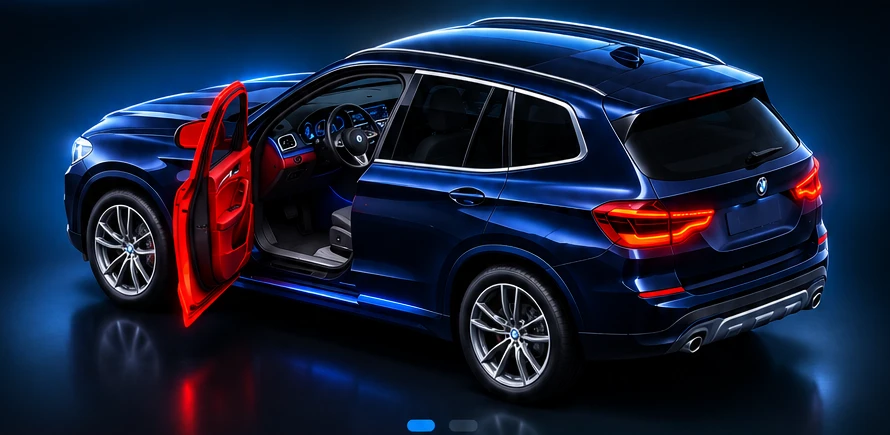

BMW Security
BMW X3 xDrive30e (G01)
♙Demo
beveiliging
beveiliging

3D-conceptbeeld · portier in afbeelding open
Portieren en achterklep
Tik om te testen⛽Brandstof—
▣Accu—
◫Kilometerstand—
⚠ 1 onderdeel open
● Demo-modusNiet live verbonden
Demonstratie: de knoppen veranderen de teststatus. De BMW-afbeelding is nog een vaste illustratie. Geen live CarData-koppeling of echt alarm.
Rijgegevens
Later kunnen we hier kilometerstand, actieradius en ritgegevens tonen, voor zover beschikbaar via BMW CarData.
—
Nog niet gekoppeldLaden
Voorbereid op laadstatus, accuniveau en elektrische actieradius, afhankelijk van de beschikbare CarData-signalen.
—
Nog niet gekoppeldOnderhoud
Ruimte voor onderhoudsgegevens en herinneringen. Nog geen echte voertuiggegevens.
BinnenkortInstellingen
Deze versie is een veilige demonstratie zonder verbinding met je BMW. Je bestaande BMW Security v7 blijft ongewijzigd.
Voor live gebruik maken we later een aparte beveiligde gegevenskoppeling. Plaats nooit BMW-tokens in deze openbare GitHub Pages-app.